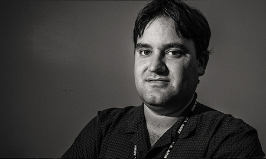

About Me
I was born in Indianapolis and raised in Asheville, NC. When I was growing up in Asheville, there weren't any breweries save for Highland Brewing. Only when I had left for college did Asheville start becoming the "Beer City" that it is known as today. Coincidentally, I started learning homebrewing. I enjoy it for trying new recipes, and eccentric styles. I've made a "rose pedal ale" as well as an "oyster stout" (made with real oysters).
Another factoid about myself is that I've been a certified medical illustrator and animator. I've had both art and medical training. Medical illustrators produce visual communications for training doctors, patients, or malpractice juries. My illustrations have been published in the New England Journal of Medicine and Journal of Hand Surgery. I've produced a 3D anatomical set used for surgical simulation, as well as animations for surgical training.